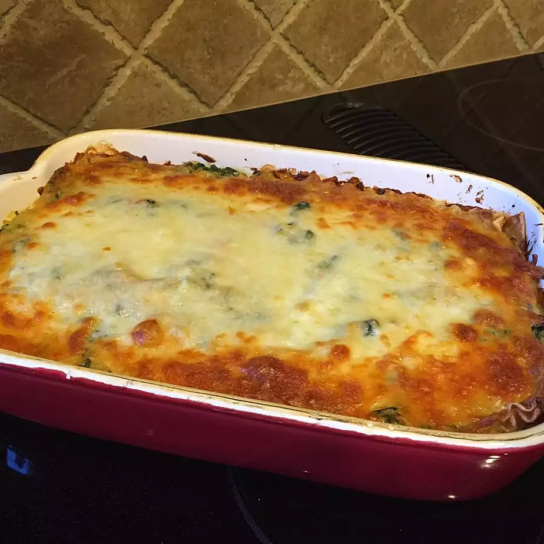

Lasagna

Description
You are going to love debbies lasagna. It is very cheesy, with a great meat to cheese to pasta ratio. After you have tried her lasagna, you won't want for any others!
Ingredients
- 9 lasagna noodles
- 9 ¼ cup margarine
- 9 ¼ cup all-purpose flour
- 9 ½ teaspoon salt
- 9 ¼ teaspoon ground black pepper
- 9 1 cup milk
- 9 ½ cup vegetable broth, or as needed
- 9 2 tablespoons white wine
- 9 ½ cup grated Parmesan cheese
- 9 1 cup light ricotta cheese
- 9 1 egg
- 91 egg white
- 9 1 tablespoon olive oil
- 9 2 cups coarsely shredded carrots
- 9 2 cups coarsely chopped zucchini
- 91 (10 ounce) package frozen chopped spinach, thawed and drained
- 91 cup shredded mozzarella cheese
Steps
- Step 1
Bring a large pot of lightly salted water to a boil. Cook lasagna in the boiling water, stirring occasionally until cooked through but firm to the bite, about 8 minutes. Drain.
- Step 2
Preheat oven to 375 degrees F (190 degrees C).
- Step 3
Melt margarine in a skillet over low heat; cook and stir flour, salt, and pepper into the melted margarine until smooth and bubbling, 2 to 3 minutes. Add milk and broth into flour mixture, stirring constantly; bring sauce to a boil. Stir wine into sauce and remove from heat. Stir Parmesan cheese into sauce until smooth.
- Step 4
Whisk ricotta cheese, egg, and egg white together in a bowl.
- Step 5
Heat olive oil in a skillet over medium-high heat; saute carrots, zucchini, and spinach until just becoming tender, 5 to 10 minutes. Stir vegetable mixture into ricotta mixture.
- Step 6
Layer 1/3 the lasagna noodles, 1/3 the ricotta-vegetable mixture, and 1/3 the Parmesan sauce in a 9x13-inch baking dish; repeat layering 2 more times with remaining ingredients, ending with a layer of mozzarella cheese.
- Step 7
Bake in the preheated oven until cheese is lightly browned and bubbling, about 30 minutes